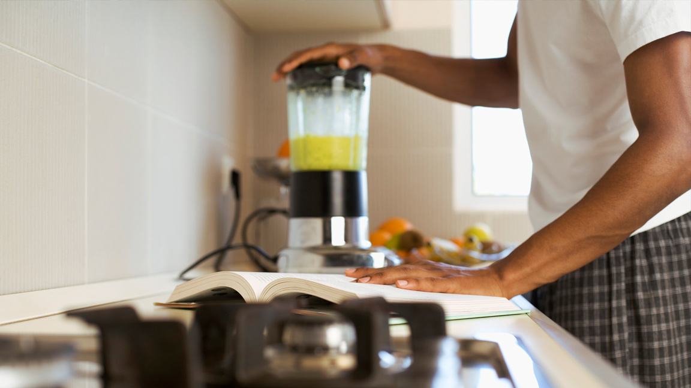

Breakfast: Eating Healthy On The Run

It seems like we are always so busy. Sometimes, we feel too busy to make food for ourselves. But what if there were some simple ways to eat heart-healthy on the go?
Two words: plan ahead.
That's the key that will keep you away from the vending machines and office donut boxes. Stock up on the healthy options and portion them out for the week in snack bags or reusable containers. We recommend nuts and seeds, grapes, cherry tomatoes, strawberries, baby carrots, celery and unsweetened dried fruit. When was the last time you had a radish?
Radishes make a great portable snack. So is air-popped popcorn – hey, its a whole grain. Whole-grain crackers and low-fat cheeses or yogurts are great to-go snacks, too. So are whole fruits of all sorts: apples, bananas, peaches, plums, oranges (whole or sliced before packing) and even kiwi. You can eat them skin and all (that's what they do in Australia).
Healthy Breakfasts To Go
For many of us, breakfast is something quick we grab as we're running out the door, or maybe even a meal we skip completely. It's easy to grab a packaged bar from the cupboard when we're in a rush, or think we'll make up for it at lunch. But oftentimes, packaged foods have added sugars and unhealthy fats, and won't keep you full and energized until lunch. Here are some homemade breakfast options that are better for you, and easy to make.
- Take muffins, for example. Instead of buying muffins at the coffee shop or grocery store (which can be jumbo-sized with little nutritional value) you can make your own muffins with healthy ingredients like fruit, nuts and whole wheat flour. Make them on a weekend and freeze them. Put one in your bag and it will be thawed and ready to eat by the time you get to work or school.
- Instant oatmeal is a great option that's a quick whole grain and will keep you full. Buy packets at the store and make them at work using hot water from the coffee maker. Just be sure to compare labels and pick flavors low in added sugars.
- Try a homemade smoothie. Smoothies are a great way to increase your fruit intake, and they're easy to make. A basic smoothie is just frozen fruit, low-fat milk or yogurt and 100% fruit juice, processed together in a blender until smooth. Experiment with different fruits to find out what you like. You can even add fresh vegetables to the mix!
Basic Berry Smoothie Recipe
Makes 2 cups; 1 cup per serving
Tip: To freeze bananas, first peel the banana, then wrap tightly in plastic wrap.
- 1 cup frozen berries, such as blueberries, raspberries or strawberries
- 1 small frozen banana, broken into pieces
- ½ cup nonfat, sugar free vanilla yogurt
- ¼ cup orange juice
Put all ingredients in a blender and blend until smooth.
Note: you can add some ice cubes if you like a little crunch!
Make Your Own Whole-Wheat Muffins
Makes 12 muffins; 1 muffin per serving, each muffin approx. 2.75 ounces
Whole-wheat pastry flour will produce a somewhat lighter muffin, if that's what you prefer. Use the "add-ins" suggested or come up with your own variations!
- 1-¼ cups whole-wheat flour or whole-wheat pastry flour
- ½ cup white or brown sugar
- 1 tablespoon baking powder
- 1/8 teaspoon salt
- 1 cup unsweetened applesauce
- ¾ cup nonfat milk
- ¼ cup canola or vegetable oil
Cooking spray
Preheat oven to 350. Lightly spray 12 muffin cups.
In a large bowl, whisk together flour, sugar, baking powder and salt. In a small bowl, whisk together applesauce, milk and oil. Add wet ingredients to dry and stir until just combined.
Fold in add-ins of choice, being careful not to over-mix the batter. Divide the batter equally between muffin cups. Bake for 25 to 30 minutes.
Example Add-Ins
- 2 cups shredded carrot + ¼ cup shelled sunflower seeds (Fold the carrots into the batter. Sprinkle the seeds on top of the muffins before you bake them.)
- 1 cup dried cranberries + ½ cup chopped pecans
- 2 cups fresh blueberries
- 1 cup mashed banana (instead of applesauce) + 1 cup chopped walnuts
Article copyright © 2016 American Heart Association. This recipe/article is brought to you by the American Heart Association's Simple Cooking with Heart © Program. For more articles and simple, quick and affordable recipes.